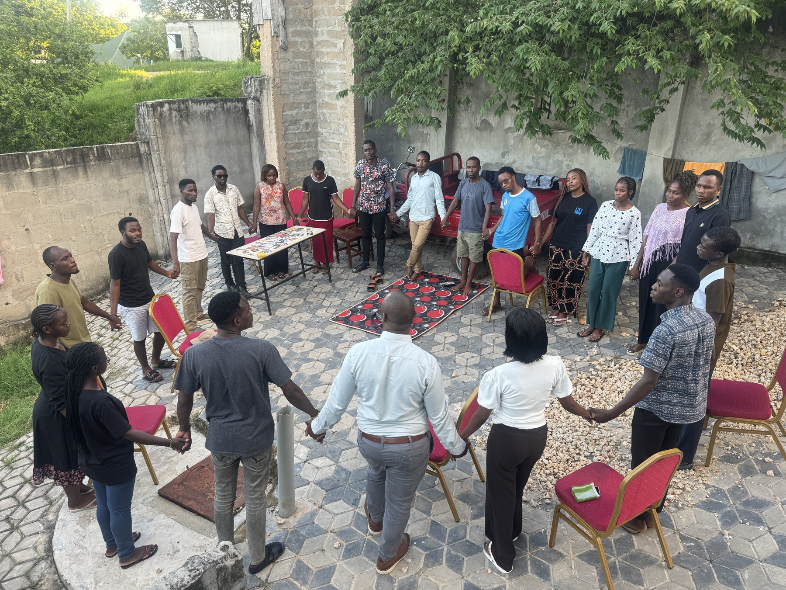

Evangelism
Sharing the Gospel with clarity, compassion, and courage.
Creating space for meaningful spiritual conversations through personal outreach, campus engagement, community initiatives, and practical evangelism tools.
↗THE LIFE MINISTRY TANZANIA
Equipping people to share the Gospel, grow as disciples, and help others take their next step with Jesus.
Evangelism · Discipleship · Training · Multiplication
WHY I SERVE
I believe every person deserves an opportunity to hear the Gospel, encounter Jesus, and be equipped to help others follow Him.
My work is about more than one conversation. It is about building relationships, developing leaders, and seeing the Gospel take root in communities.
A LITTLE ABOUT ME
A personal ministry journey shaped by faith, relationships, and a desire to see lives transformed by Jesus.
I serve with The LIFE Ministry Tanzania (LMT), helping people discover Jesus and helping believers become confident, multiplying disciples.
Through personal evangelism, church and campus engagement, discipleship, and practical training, I work alongside others to make the Gospel known and strengthen local ministry.
I am especially passionate about equipping young people, emerging leaders, churches, and communities to take ownership of the mission and pass it on to others.
WHAT I DO
Different expressions of one mission: helping people meet Jesus, grow in faith, and share that hope with others.
Sharing the Gospel with clarity, compassion, and courage.
Creating space for meaningful spiritual conversations through personal outreach, campus engagement, community initiatives, and practical evangelism tools.
↗Helping people take their next step with Jesus.
Walking alongside new and growing believers through Scripture, prayer, intentional relationships, follow-up, and communities that encourage spiritual growth.
↗Preparing believers to take part in the mission.
Facilitating practical training for churches, campus fellowships, students, and ministry teams in evangelism, discipleship, follow-up, and multiplication.
↗Using story and media to make Jesus known.
Supporting Jesus Film outreach, local-language film launches, church training, resource distribution, and follow-up that connects people with local believers.
↗Equipping people to equip others.
Encouraging emerging leaders and ministry teams to serve faithfully, develop others, and build sustainable movements of disciples who make disciples.
↗THE WORK SO FAR
Ministry is ultimately about people, not statistics. These figures offer one snapshot of outreach and equipping efforts reported in a previous ministry update.
Please verify and update these figures, their date range, and definitions before publishing.
STORIES FROM THE FIELD
A place for testimonies of changed lives, growing faith, and communities taking new steps toward Jesus.

JESUS FILM MINISTRY
Through local-language resources and church partnerships, people can encounter the story of Jesus in a way that speaks to their community. Training and follow-up help local believers continue the conversation beyond a screening.
Share a story or testimonyTell a short, specific story: the situation, what happened, what changed, and what you learned. Get permission before sharing names, faces, or personal details.
TRAINING & RESOURCES
Practical, relational training for churches, campus fellowships, student groups, and ministry teams that want to grow in sharing the Gospel and making disciples.
Request a trainingPersonal evangelism & spiritual conversations
↗Discipleship & follow-up
↗Jesus Film outreach & church engagement
↗Leadership development & multiplication
↗Training can be adapted to the context, goals, and availability of your team.
BE PART OF THE STORY
There are different ways to stand alongside this work. Your prayers, encouragement, and practical support matter.
Ministry grows through a community of people who pray, give, encourage, and serve together. If this mission resonates with you, I would love to connect and share more about the work and current needs.
LET’S CONNECT
Have a question, a testimony to share, or an idea for working together? I would be glad to hear from you.
BASED IN
Dodoma, Tanzania
For ministry conversations, collaboration, and updates, please get in touch.